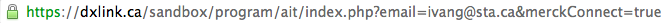

Following is the information that needs to be sent to dxLink.ca in order to process and register a Merckconnect user to dxLink database
For testing the web service, the request should be sent to the development sandbox environment: https://dxlink.ca/sandbox/registration.php. After testing/debugging process is complete, the HTTP header url should be replaced by: https://dxlink.ca/services/registration.php.
HTTP Request specs:
Authentication: None
Request header content type: 'Content-Type: application/json'
Request method: POST
HTTP message body:
The The first four values are compulsory. If they are null or empty the registration can't be completed and a 400 Bad request response status code will be returned.
Also, if the jSON received is malformed or missing any of the key-value pairs, a 400 Bad request with a message is sent back. The dxLink script is expecting the sta_agreement value to be true, meaning that the user agrees to the terms and conditions before leaving the Merckconnect portal. If the "sta_agreement" field is a false boolean, then the following response will be sent:
Status Code: 202 Accepted
Once the jSON object has been parsed, this data will be queried against the database. If a user with the unique email is found in the database records, a 200 Ok Status Code is returned with the response message:
Status Code: 200 Ok
If the user is not yet registered, a new record is inserted in the database and an HTTP Response header is sent back:
Status Code: 201 Created
After the successful response header is sent (status code is 200 or 201), Merckconnect platfrom is now able to redirect the user to the clicked program. The redirection to the link must be sent along with the following fields:
| Name | Value |
|---|---|
| mail@mail.com | |
| merckConnect | true |
The value of the parameter email is a String and merckConnect parameter has a boolean value.
The first value is the email of the user which was submitted in the Registration process. The second value is a boolean flag. It is important to send the merckConnect key/value pair, since dxLink will be checking this flag in order to acknowledge that the request is coming from MerckConnect portal. For development purposes a dummy program was setup in the sandbox environment. The url that should be used for testing the access to the dummy program is: https://dxlink.ca/sandbox/program/ait/index.php.
Below is an example using a request method GET with the url and the query string params.

The request can be issued using either GET or POST methods. The user email is queried against the database and if it exists, a Session will be created and the user will be logged. Otherwise this will bring to the access denied page.